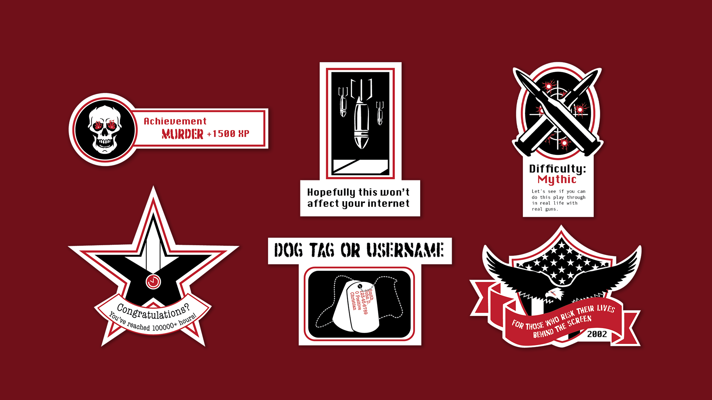
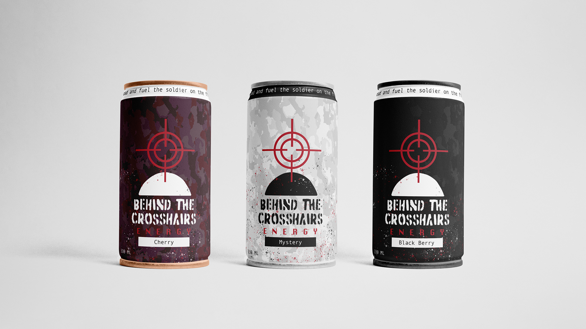
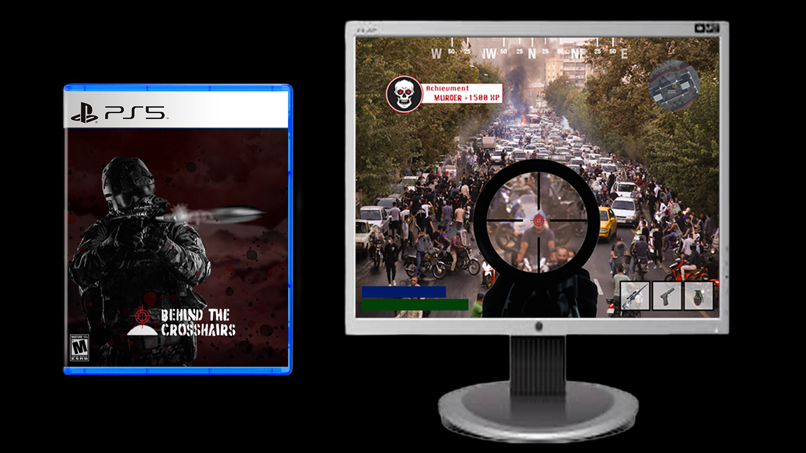
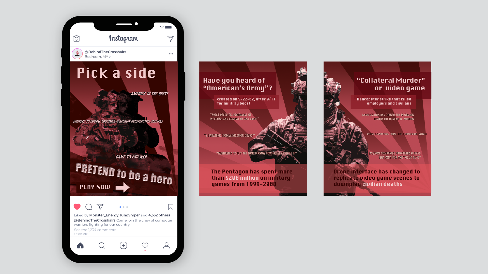
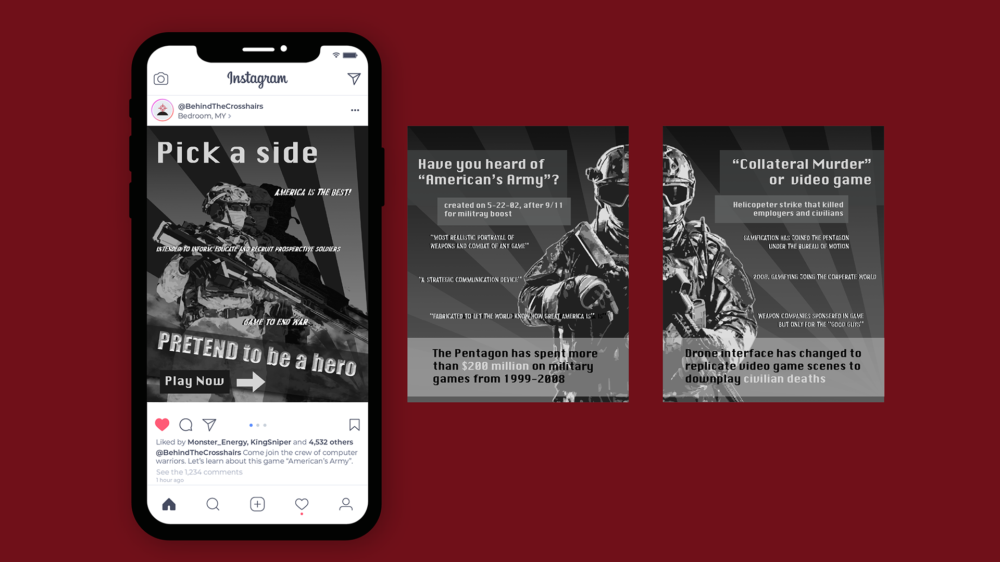

GRAPHIC DESIGN // SOCIAL ACTIVISM // 2025
BEHIND THE
CROSSHAIRS
A visual commentary on the relationship between first-person shooter games, simulated violence, and the way war can become entertainment.
01 // VISUAL EVIDENCE
BEHIND THE
MATERIAL





Behind the Crosshairs examines how FPS games can blur the line between entertainment and real-world violence, using visual design to question what gets lost behind the screen.
02 // PROJECT COMPLETE
BEHIND THE
CROSSHAIRS
A visual commentary on the relationship between first-person shooter games, simulated violence, and the way war can become entertainment.
← RETURN TO ARCHIVE